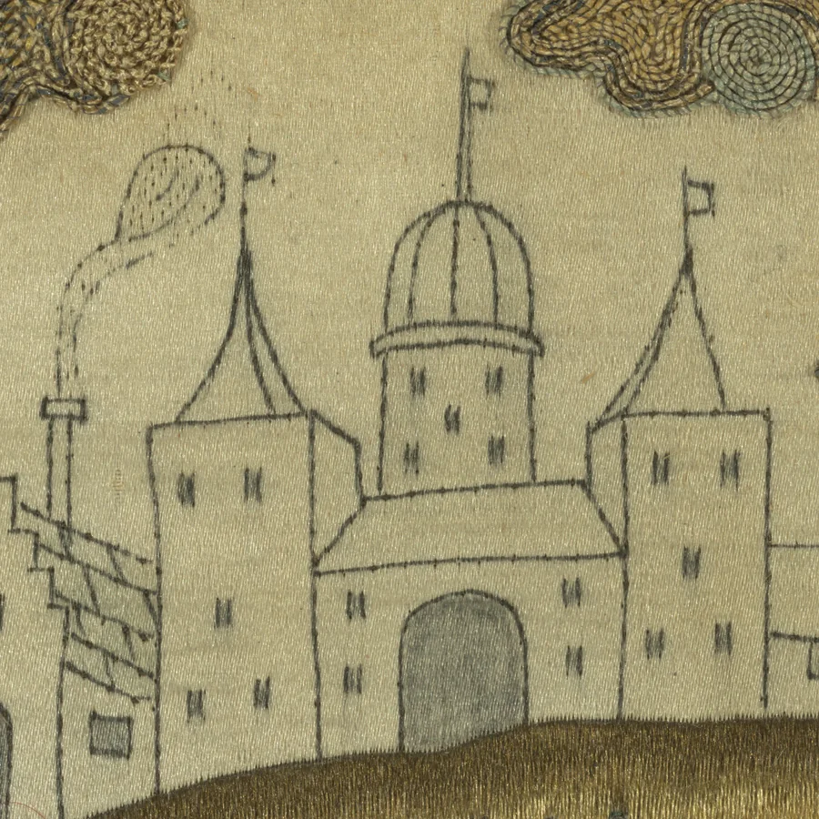

Digitally Reintegrating Losses in Heritage Embroidery


Abstract
Embroidered heritage textiles commonly survive with losses. Physical reintegration is slow, costly and in many cases ethically precluded, yet a credible image of the intact object is valuable for conservation planning, interpretation and public engagement. We present a workflow for digital reintegration of losses that is deliberately independent of any single generative model. Low-rank adapters (LoRAs) encode individual stitch structures (satin stitch, french knot and silk purl) from photographic crops of 17th-century English embroideries, and are deployed on the inpainting or instruction-edit variants of four contemporary image-generation model families.
A faithful fill should reproduce the craft surface structure of a stitch type rather than the exact thread positions of the lost original, so we verify fills in surface-normal space. A Marigold normal estimator, fine-tuned on 11,813 photometric stereo normal map tiles of the same corpus, converts each fill to a normal map. Seven training-free surface descriptors are computed from it and compared, by Mahalanobis distance, to the cloud of real stitches of the prescribed type. On synthetic losses cut into intact held-out tiles, fills made without the stitch LoRA drift steadily away from the real-stitch cloud as the loss grows. Fills made with it stay close to real embroidery at all scales, across all six model variants and all three stitch types. The workflow runs end to end on a single consumer GPU.
How it works
A conservator delineates a loss and prescribes the stitch that the surviving evidence indicates. Each stitch is learned once. The loss is filled with it, and the fill is then checked against real stitches of that type.
1Learning a stitch
For each stitch type we train a LoRA (rank 16, 7,000 steps at 1024²) on 40 captioned crops of homogeneous
stitching. Each caption contains a rare trigger token (embfnchknt, embstn,
embslkprl), so the stitch can be invoked or withheld at inference. The same crops and recipe were
applied to four base models (SDXL, FLUX.1-dev, Qwen-Image and Z-Image), and each LoRA transfers without retraining
onto its model's inpainting or edit variant. Training a stitch LoRA takes hours, so when a base model is superseded
the same crops and recipe re-create the stitch vocabulary on its successor. The workflow is a method, not a model.
The same stitch vocabulary learned on four models from one dataset and recipe (paper Figure 3). Drag the slider to scrub through training.
2Reading the surface
Embroidery is a relief medium. Its identity lies in thread direction, stitch geometry and surface structure, which colour similarity only weakly constrains. We therefore lift every fill into surface-normal space with Marigold-Normals fine-tuned on 11,813 colour and normal tile pairs from our corpus. Against held-out photometric stereo ground truth, the fine-tune reduces mean angular error from 18.8° to 12.3° over the full held-out set and roughly halves it on the 10 highest-relief tiles (31.8° to 16.7°). The share of pixels within 10° rises from 28% to 85%. This validation is what allows the estimator to be used as a measuring instrument on generated images, where no ground truth can exist.
Normal estimation on held-out tiles: colour input, PS + photogrammetry ground truth, public Marigold-Normals baseline, and our embroidery fine-tune, with angular-error maps and mean angular error (paper Figure 2).
3Checking fills against real stitches
From the normals our fine-tuned Marigold model estimates for a fill, we compute seven training-free descriptors: mean and spread of slope, roughness, bump density and spacing, directional coherence and dominant pitch. A fill's score D is the Mahalanobis distance from its descriptors to the cloud of real stitches of the prescribed type. Lower is closer to real. Real held-out crops sit at D ≈ 2.4, the expected radius of the cloud itself. Pooled over six model variants, fills without the LoRA drift from 3.07 to 4.38 to 7.30 as the loss grows from 128 to 256 to 512 px. With the LoRA they stay at 2.85, 2.85 and 3.78.
The result in the metric's own space (paper Figure 6), per stitch type (rows) and loss size (columns), pooled over models. LoRA-off fills (orange) scatter away from the real cloud as the loss grows, while LoRA-on fills (blue) stay close to it. The strip above each panel gives the mean distance off and on, and the improvement Δ. Each panel is whitened by the real reference, so D is a dot's distance from the centre in the full seven-dimensional descriptor space. The view shows two of those dimensions.
4Controllable structure
Every score above comes from losses that were fully noised, with no procedural init, so the scores reflect only what the model and its stitch LoRA produce. For a real reintegration, each region may also be initialised with a procedurally synthesised approximation of its stitch and then denoised only part of the way. This init is an aid to conditioning and plays no part in the evaluation. Its parameters (knot radius, satin thread width and angle, purl coil pitch, colour) give the conservator direct control over the reintegration, and the partial denoise keeps them.
Procedural init (left) and generated fill (right) on the castle piece, made with FLUX.1-dev and the stitch LoRA. Within each parameter the seed is fixed and only that parameter changes. Left and right move between parameters; up and down step through values.
Result

The castle piece reintegrated: per-region variants composed with the picker, design lines carried through the init. Compose your own in the picker.
Try it
Everything above can be reproduced from the released code and LoRAs. Start in the browser, then generate on a free GPU.
Per-region variant picker
Eight pre-generated fills per loss region on the castle piece. Click a region to cycle its variants, then download your composite.
Open the pickerYour own image
Upload an image, mark losses as layers with box / brush / magic-wand tools or by quantising colours, pick a stitch (or your own LoRA) for each, preview procedural fills in the browser, and export a job bundle for Colab or a local GPU.
Open the mask toolGenerate real textures
Run SDXL with the stitch LoRAs on a free Colab GPU, on the castle piece or on your own exported image and masks. It also runs locally on a GPU with about 12 GB of memory.
Open in ColabResources
- Code: the full pipeline, mask tools and evaluation, on GitHub.
- LoRA weights: twelve adapters (SDXL, FLUX.1-dev, Qwen-Image and Z-Image, three stitches each), on GitHub Releases.
- Training samples: 20 image and caption pairs per stitch, with the exact ai-toolkit configs, in the repo.
- Photometric stereo tiles and fine-tuned Marigold: 13,551 colour and normal pairs and the 3.5 GB normals checkpoint, on Zenodo. The checkpoint and colour tiles are in part 1 and the normal tiles in part 2. A 100-pair sample is in the repo.
Citation
@inproceedings{reintegrating-losses-2026,
author = {Jenkinson, George P. and Aure Calvet, Xavi},
title = {Digitally Reintegrating Losses in Heritage Embroidery with Model-Independent Stitch Priors and Surface-Normal Verification},
booktitle = {Eurographics Workshop on Graphics and Cultural Heritage (GCH)},
year = {2026},
note = {To appear}
}